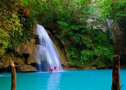

*ESSENTIAL INFORMATION*
Kawasan falls Cebu is a peaceful natural place where you can enjoy many waterfalls of natural
spring water located near the southern tip of Cebu Philippines..
A gentle hush of rushing ice cool water..
All this and more in Badian’s Kawasan Falls!
*PRODUCT PHOTO*

*PRODUCT NAME*
WELCOME TO BADIAN CEBU TOURIST SPOT!
*RULES AND PAYMENT*
The entrance price is:
senior=150.00 per head
student=50.00 per head
ordinary=100.00 per head
Kawasan Falls is a multi-layered waterfalls located in Barangay Matutinao in the town of Badian of southern Cebu.
It is less than an hour away from scuba diving hotspot of Moalboal.
Famous for its beautiful turquoise water, Kawasan Falls sits at the foot of Mantalongon Mountain Range.
back to menu